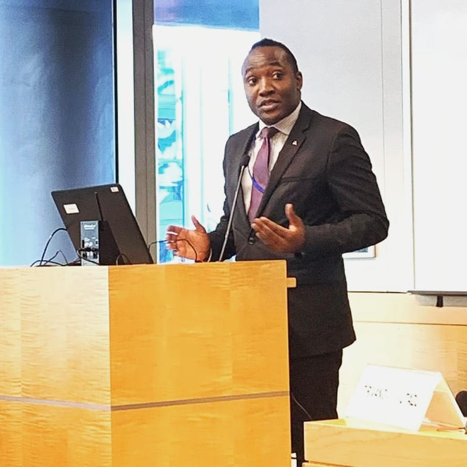

Profile: Patson Malisa

Patson Malisa is a Diplomat and Development Executive who has served in leadership roles in Local, Regional and International organisations over the last decade. He has served two terms as Deputy Presiding Officer of the African Union’s Economic, Social and Cultural Council (ECOSOCC), the youngest to be elected to the position.
He has experience as President of the Organisation of African Youth, Chairman for South Africa at the International Youth Council, and the Vice President of the United Nations Association of South Africa (UNASA).
He has also served on the Civil Society Steering Group, and as a member of the Investors Group of the Global Finance Facility where he was responsible for the production and inception of the Global Youth Engagement Strategy.
He currently advises public and private entities on matters of best practices in Global Development.
Patson completed undergraduate studies in Public Accountability at Stellenbosch University, and graduate studies at the Massachusetts Institute of Technology, obtaining a Micromasters Credential in Data, Economics & Design of Policy.
He was featured in the Mail & Guardian 200 Young South Africans list of 2015 in the Politics and Governance category.